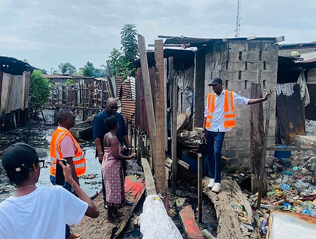
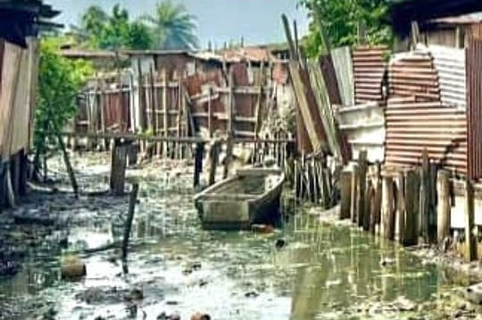
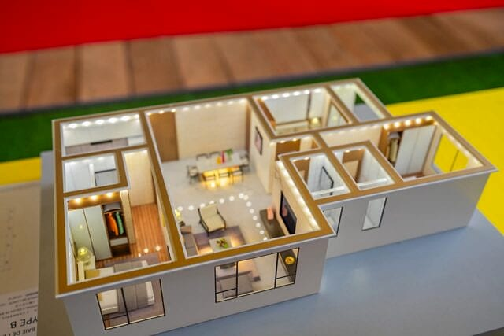

Accueil › Arrondissements
ProximitéChaque arrondissement dispose de sa mairie et de son maire, sous la coordination du maire central. Retrouvez votre arrondissement, ses quartiers et ses services.
Liste des quartiers du 4e arrondissement à valider avec la mairie d'arrondissement. Les maires des 1er, 2e et 3e arrondissements de la mandature 2025 seront ajoutés dès confirmation.



En janvier et février 2026, en pleine saison des pluies, la mairie du 4e arrondissement conduite par Érick Ayang Nang a multiplié les opérations de terrain pour améliorer durablement le cadre de vie.